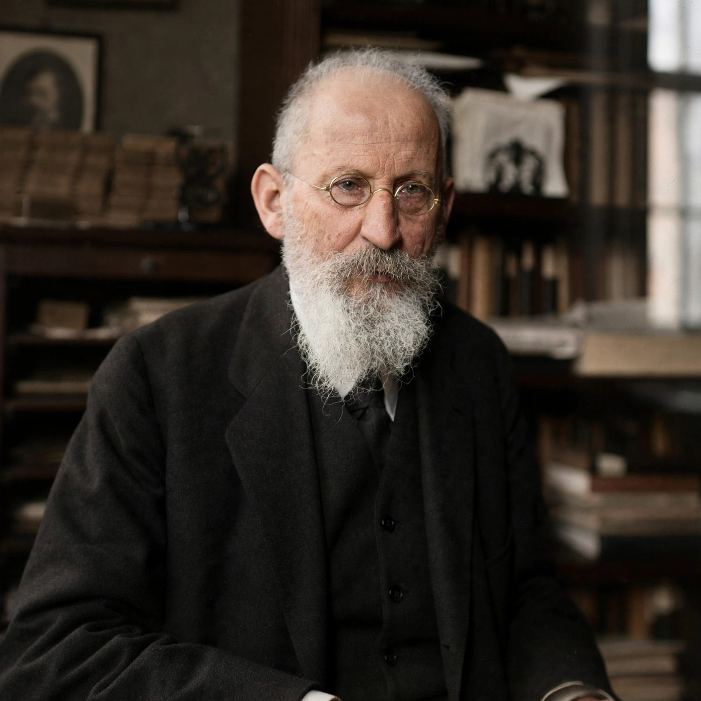

Eduard Bernstein (6 January 1850 – 18 December 1932) was a German social democratic theorist and politician, and a member of the Social Democratic Party of Germany (SPD). He is best known as the founder of evolutionary socialism and the leading figure of Marxist revisionism, arguing that socialism should be achieved through gradual democratic reform rather than revolution.
Born in Berlin to a Jewish family, Bernstein worked as a bank clerk before joining the socialist movement. During Bismarck's Anti-Socialist Laws he lived in exile in Zurich and London, where he became close to Friedrich Engels and edited the party newspaper Der Sozialdemokrat. He returned to Germany in 1901 and sat in the Reichstag for much of the period 1902–1928.
In a series of articles in Die Neue Zeit (1896–98) and in his book The Preconditions of Socialism (1899), Bernstein re-examined Marx's predictions in light of economic developments: he argued that the middle classes were not disappearing, that living standards were rising, and that crises were not necessarily intensifying. He concluded that the movement should openly pursue democratic reforms — his famous formulation held that "the final goal, whatever it may be, is nothing to me; the movement is everything."
Bernstein's revisionism was condemned by orthodox Marxists including Karl Kautsky and Rosa Luxemburg, whose Reform or Revolution (1899) was written against him, and the SPD formally rejected revisionism at its 1903 Dresden congress while continuing reformist practice. Bernstein is widely regarded as a founding theorist of modern social democracy; after the First World War he rejoined the SPD from the anti-war USPD and served in the early Weimar Republic.
See also: Social democracy · Revisionism (Marxism) · Rosa Luxemburg